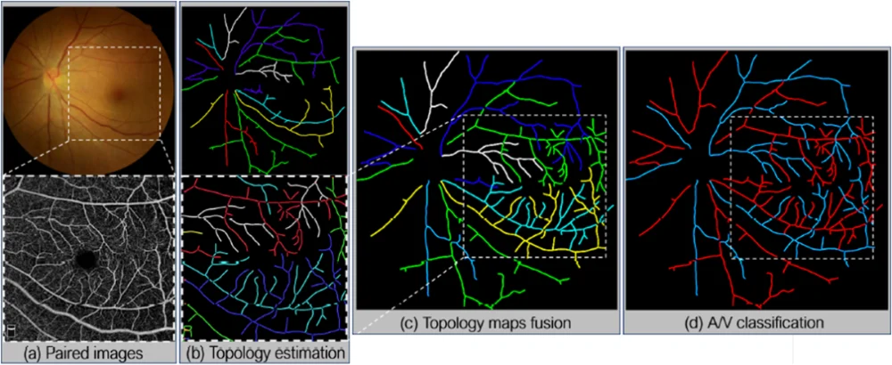
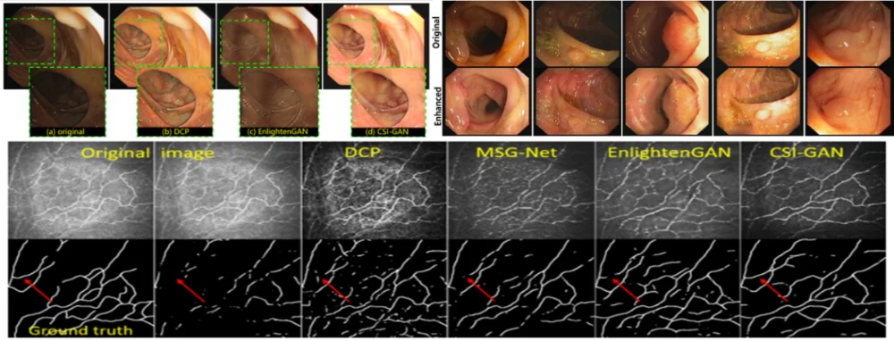
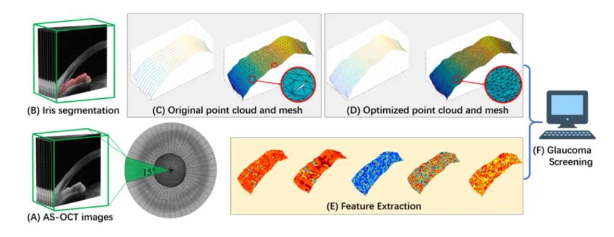

iMED五篇论文被 MICCAI 2020录用，MICCAI (International Conference on Medical Image Computing and Computer Assisted Intervention)是跨医学影像计算(MIC)和计算机辅助介入 (CAI) 两个领域的综合性学术会议，是该领域最有影响力的学术会议之一，被认为有着非常强的国际影响力和非常高的学术权威性。随着人工智能在各个领域的蓬勃发展， MICCAI收录的论文代表医学影像计算和计算机辅助介入的最前沿技术和研究风向标，引领以上领域的未来发展方向。
谢建洋的论文“Classication of Retinal Vessels into Artery-Vein in OCT Angiography Guided by Fundus Images” 关注OCTA图像缺少分类亮度信息，因此无法直接实现动静脉的分类问题。建立成对的眼底彩照和OCTA血管的拓扑结构，并提出拓扑信息传递方法实现拓扑结构的配准，从而将眼底彩照的分类信息传递到OCTA血管树中，实现OCTA的动静脉分类。首次提出OCTA血管的动静脉分类工作，并标注了一批OCTA血管动静脉的金标准。

马煜辉的论文“Cycle Structure and Illumination Constrained GAN for Medical Image Enhancement”关注了CycleGAN缺乏对局部细节的有力约束，提出光照正则化和结构损失，使得模型能够兼顾增强图像的光照均匀性和结构完整性。在CycleGAN的基础上提出CSI-GAN，能够兼顾增强图像的光照均匀性和结构完整性，有效提高了角膜神经共聚焦显微镜图像和消化道内窥镜图像的视觉质量。

郝华颖的论文“Open-Narrow-Synechiae Anterior Chamber Angle Classification in AS-OCT Sequences”关注到临床诊断需要一个更明确的ACA三分类系统（即开放性、狭窄性或粘连性）。文章提出了一种序列多尺度聚集深度网络（SMA-Net），用于在AS-OCT序列中进行开、窄和粘连ACA分类。实验结果表明，提出的方法在适用性、有效性和准确性方面均优于现有的最新方法。
张浩的论文“Cerebrovascular Segmentation in MRA via Reverse Edge Attention Network” 研究脑血管分割算法的性能通常受到图像对比度差，噪声尺度变化大以及血管边缘特征提取困难的限制。文章提出了基于反向边缘注意力机制的神经网络来充分提取血管边缘特征。基于公共数据集的实验结果表明，提出的方法显著提高了脑血管分割的结果.
郝晋奎的论文“Reconstruction and Quantification of 3D Iris Surface for Angle-Closure Glaucoma Detection in Anterior Segment OCT”发现现有的闭角型青光眼检测方法主要基于从单个2D切片中提取出的特征，而这些特征在判断不同阶段的闭角型青光眼时判别性不足。基于AS-OCT图像的3D虹膜表面重建和量化的框架，通过实验表明3D虹膜分割和表面重建方法是有效的。与基于2D的特征相比，基于3D的特征表示在闭角型青光眼检测中具有更好的性能。

另外，与英国利物浦大学郑亚林教授团队合作的“CNN-GCN Aggregation Enabled Boundary Regression for Biomedical Image Segmentation”也被提前录用。
附：论文信息
[1] Jianyang Xie, et.al., Classication of Retinal Vessels into Artery-Vein in OCT Angiography Guided by Fundus Images, MICCAI 2020.
[2] Yuhui Ma, et al., Cycle Structure and Illumination Constrained GAN for Medical Image Enhancement, MICCAI 2020.
[3] Huayin Hao, et al., Open-Narrow-Synechiae Anterior Chamber Angle Classification in AS-OCT Sequences, MICCAI 2020.
[4] Hao Zhang, et al., Cerebrovascular Segmentation in MRA via Reverse Edge Attention Network, MICCAI 2020.
[5] Jinkui Hao, et al., Reconstruction and Quantification of 3D Iris Surface for Angle-Closure Glaucoma Detection in Anterior Segment OCT, MICCAI 2020.
[6] Yanda Meng, etl., CNN-GCN Aggregation Enabled Boundary Regression for Biomedical Image Segmentation, MICCAI 2020.